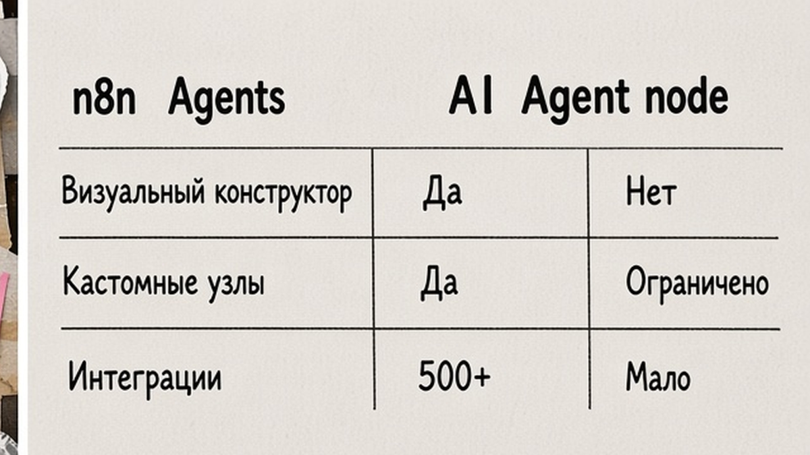
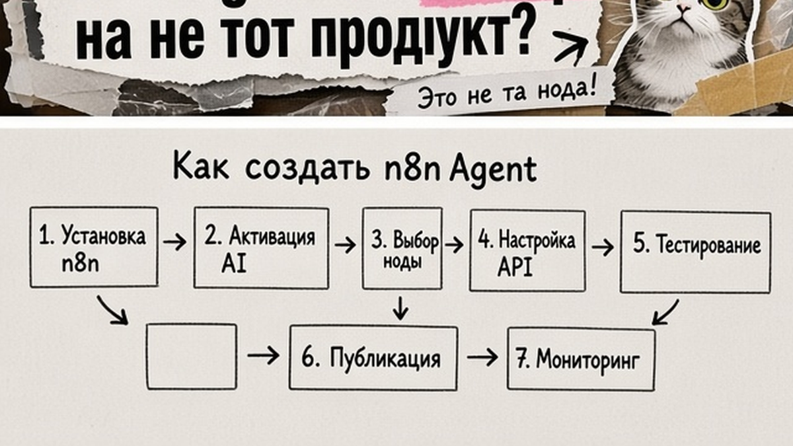
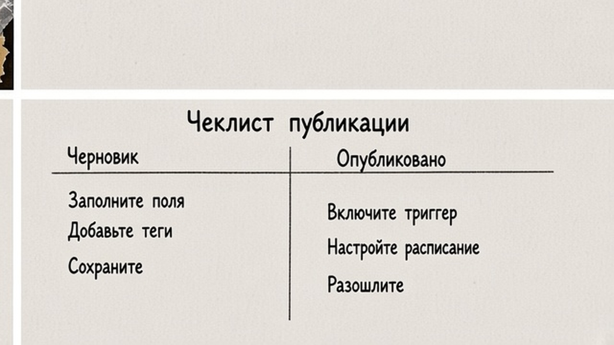

Вы ищете "n8n агенты", открываете гайд про AI Agent node и тратите вечер не на тот продукт. С сентября 2026 n8n Agents живут во вкладке Agents: настраиваете модель, tools и workflows, публикуете и зовёте из Slack, cron или другого workflow. Ниже - настройка n8n agents: Preview, Publish, каналы, workflow-tools и Message an Agent. Вы запустите опубликованного standalone-агента и проверите его в канале без переписывания всей automation.
TL;DR / Быстрый инсайт: n8n Agent (2026) - это "сотрудник в проекте": текстовые instructions, модель, tools (интеграции, MCP или ваши workflows), память и сессии. Один turn в чате = one execution из общей квоты; вызовы workflow-tools внутри turn не считаются отдельно. Slack, Telegram, Linear и расписание работают только после Publish. Для вызова из canvas есть Message an Agent. Статус продукта - Preview: тестируйте до продакшена и включайте approval на опасные tools.
Если вам нужен агент только внутри одного сценария на холсте, смотрите отдельный гайд про AI Agent node в workflow. Там другой паттерн: Chat Trigger, нода AI Agent, sub-tools. n8n Agents не заменяет node - старые workflow продолжают работать.
Официальный запуск описан в анонсе от 25.09.2026. Cloud: Agents на stable-планах; self-hosted Community - с n8n 2.32.3+ и модулем agents (Enterprise self-hosted на 03.10.2026 без Agents tab - сверяйте доку). Queue mode для agents не поддерживается - держите regular mode, иначе каналы вроде Telegram могут падать.

AI Agent node - дирижёр внутри одного workflow: запустился run, отработал, завершился. Standalone Agent живёт в проекте: свои sessions, memory, версии draft/published, каналы Slack и cron без нового canvas под каждый вход.
| Критерий | n8n Agents (Agents tab) | AI Agent node в workflow |
|---|---|---|
| Где живёт | Agent Builder, project-level | Один workflow на canvas |
| Каналы | Slack, Telegram, Linear (+ Discord в анонсе) | Chat Trigger, Telegram node и т.д. вручную |
| Расписание | Hourly, daily, weekly, custom cron на published | Отдельный Schedule Trigger + workflow |
| Workflows как tools | Добавляете workflows того же project | Call n8n Workflow tool на node |
| Биллинг turn | 1 message пользователя = 1 execution | 1 run workflow = 1 execution |
Итоговый вердикт: Берите n8n Agents, если один и тот же ассистент нужен в Slack, по расписанию и из нескольких automation. Оставайтесь на AI Agent node, если задача локальная: один бот в одном workflow без publish-цикла.
Делайте: в lead-абзаце для команды явно назовите, какой продукт настраиваете. Не делайте: копировать tutorial про node, когда в UI уже есть вкладка Agents.

MCP (Model Context Protocol) - "общий язык", как модель подключается к внешним сервисам как к розеткам; в Agent Builder tools могут быть built-in ноды, workflows, custom JSON schema или MCP servers.
Делайте: короткий system prompt на 10-15 строк. Не делайте: вешать десять tools "на будущее" - модель путается так же, как у Tools Agent node с Max Iterations.

Channels и Schedules смотрят на published snapshot. Draft правите в Preview без смены production, пока не нажмёте Publish снова.
Self-hosted: не обещайте enterprise governance "уже здесь" - в launch post governance для Enterprise "on the way", сверяйте docs перед продом.
Делайте: после каждого publish прогоните один smoke-test в Preview и один в канале. Не делайте: подключать боевой Slack-inbox в день первого publish.
Схема после Publish:
Agents tab: Create Agent → draft (model + instructions + tools) → Preview → Publish → Channel Slack + Schedule cron → Tool Workflow "Add CRM note only" → Existing workflow → Message an Agent → reply в следующие nodes
Slack. В Agent Builder добавьте channel Slack, авторизуйте workspace по доке, протестируйте thread. В docs также Telegram и Linear; Discord упомянут в анонсе - сверяйте актуальный список в UI.
Schedule. Daily, weekly, monthly или custom cron с чёткой задачей ("утренний triage inbox"). Работает только на published; смотрите last/next run в интерфейсе.
Message an Agent. В любом workflow добавьте узел Message an Agent, выберите опубликованного агента, передайте контекст (ticket id, текст лида). Одно сообщение = one execution. Ответ заберите в следующих nodes.
Делайте: cron формулируйте objective одним предложением, иначе модель "размазывает" утренний run. Не делайте: держать agents в queue mode - docs явно предупреждают о сбоях каналов.
Workflow-tool - безопасный паттерн для CRM: агент не держит ключи от amoCRM/Bitrix24, а вызывает workflow "добавить note с полями X,Y", где credentials и валидация. Sub-agents - отдельные опубликованные агенты как tools для декомпозиции.
| Тип tool | Когда использовать | Риск |
|---|---|---|
| Built-in integration | Чтение календаря, поиск письма | Средний - scope credential |
| Workflow в project | Узкая write-операция с audit | Низкий при approval |
| MCP server | Единый доступ к пачке SaaS | Высокий без allowlist |
| Custom JSON schema | Webhook во внутренний API | Зависит от API auth |
Episodic memory требует OpenAI credential - заложите это в self-host env заранее.
Делайте: один workflow = одна бизнес-операция. Не делайте: давать агенту прямой destructive API без human-in-the-loop.
Делайте: начните с read-only tools и одного write-workflow под approval. Не делайте: отдавать production CRM в первый день Preview.
Если параллельно строите no-code automation на Make, загляните в курс Make.com и вайбкодинга - там те же паттерны human-in-the-loop, но другой интерфейс.
Материал проверен: Артур Хорошев, CEO Maya AI, автор курса по Make.com и вайбкодингу (профиль).
Достоверность данных: версии n8n, pricing, биллинг turn=execution и статус Preview сверены с официальными blog.n8n.io, docs.n8n.io и n8n.io/pricing на 03.10.2026. Показы Wordstat в текст не включались (MCP Wordstat недоступен в прогоне).
Откройте Agents → Create Agent → задайте Model и Instructions → добавьте tools → Preview в Chat UI → Publish. Для canvas-сценария без publish используйте AI Agent node в отдельном workflow.
Agents - один раз в Agent Builder, publish, Slack/schedule и несколько workflows как tools. Node работает только внутри одного workflow run без project-level sessions.
Да, после Publish подключите Slack channel в Agent Builder и протестируйте thread. Draft без publish в Slack не уедет в production channel config.
Один turn = one execution из лимита плана (как полный workflow run). Assistant при сборке агента расходует отдельные AI credits. Смотрите pricing и docs Agent executions.
Да. Schedules привязаны к published версии; draft меняйте через Preview, затем republish и проверьте last/next run.
Проверьте n8n 2.32.3+, модуль agents в N8N_ENABLED_MODULES, docs Enable agents и что instance не на Enterprise без поддержки Agents. Обновитесь до рекомендованной 2.34.x при phased rollout.